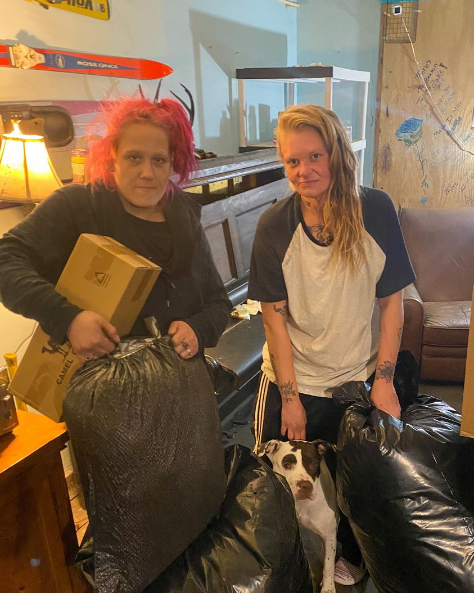

Timeline photos
This is Kristen on the left and Kat on the right.
I had just given them some tents and blankets provided by you.
I look at these girls and I just see young women who could be going to college, worrying about roommates and how the college cafeteria doesn’t have fresh strawberries.
Instead, they are worrying about trying not to freeze to death in yet another Ohio winter they are going to have to spend outside.
One time I was driving a young sex worker somewhere. I never ask where I’m taking people. She was telling me she got into that life at 14 because her mom took her to the dance club where she worked. At the time I was talking with her she lived by the river spending every single penny she made on fentanyl. She was fighting E. coli she had gotten from drinking river water.
After I dropped her off I drove home to the westside of Akron. I needed to get something at cvs at Market and Pershing. I walked in and saw a young woman shopping. My immediate thought was: are you heading off to turn some tricks so you can get just a little more fentanyl to make all the pain go away?
Of course not. She was born 4 miles west from where I had just been into a family with money and education and generational wealth.
It is 47 degrees and raining right now in Akron. If you are able to donate supplies or financially to help young women like Kristen or Kat you can do so here:
https://donorbox.org/help-your-homeless-neighbor